2-14: Breakpoints
0.1 To-do
- Put function in same script for this lesson?
1 Purpose
set up breakpoints
pausing execution of script for debugging
use breakpoints inside for loops
set up a conditional breakpoint
2 Material
The script for the lesson is here
A second script that contains a function to debug
The data used for the lesson is here
3 Debugging your code
One of the most powerful debugging tools in any programming language, and a staple of most professional programmers, is the breakpoint. Breakpoints allows you to pause the execution of your script at a specific line or command. While paused, you can look at Variables as they are at that moment in the script’s execution, enter commands in the Console, or step through your script’s execution. This is a very useful tool for tracking down hard-to-find problems in your script.
The implementation of breakpoints in R was historically far less robust than most programming languages. However, in February 2026, Positron added breakpoints – marking the first time an R development environment effectively implemented breakpoints (RStudio has breakpoints, but they were not well implemented).
3.1 Issues with breakpoints in Positron
Breakpoints were first introduced to Positron in February 2026 and, while they work, there are still some obvious bugs and quirks. Positron knows about the issues and I would expect them to be fixed by mid-2027. Until then, I will mention the bugs, how things should work, and they currently work.
Here are the bugs (and a bit of self-promotion, too):
4 Setting up a breakpoint
A breakpoint is like a pause button in the execution your script. In Positron, you set a breakpoint by clicking to the left of the line number – this space is called the gutter area. A gray-outlined dot is initially put in the gutter area (line 4) – indicating that this is an unverified breakpoint. Once the script is sourced and the code in the line is verified, the dot becomes red (line 8). Note: Clicking on the breakpoint dot removes the breakpoint.
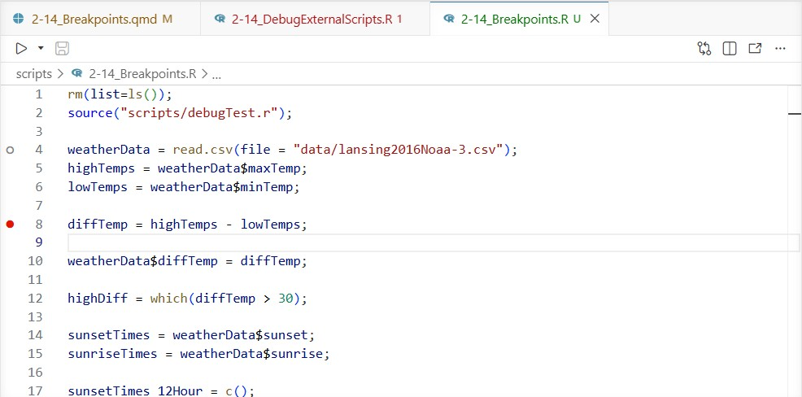
When you Source your code, the script will execute up to, but not including, the line with the breakpoint. Your script is now paused at the line with a breakpoint, and you are in debug mode, which R calls Browse mode (Figure 2).
Note: A breakpoint only works when you Source your script. It will not work if you use Control-Enter to execute individual lines of code.
4.1 Debug Mode
There are 4 things in Positron that indicate you are in debug mode:
A hollow arrow appears at the code line the script is paused at. The arrow shows you the line that will be executed next (i.e., the script is paused right before the line of code)
Floating debug controls appear in file tab area
The Console indicates it is in browse mode with
Browse[1]>The Run and Debug tab appears on the left side
- this tab has more advanced debugging tools that we will not get into in this lesson
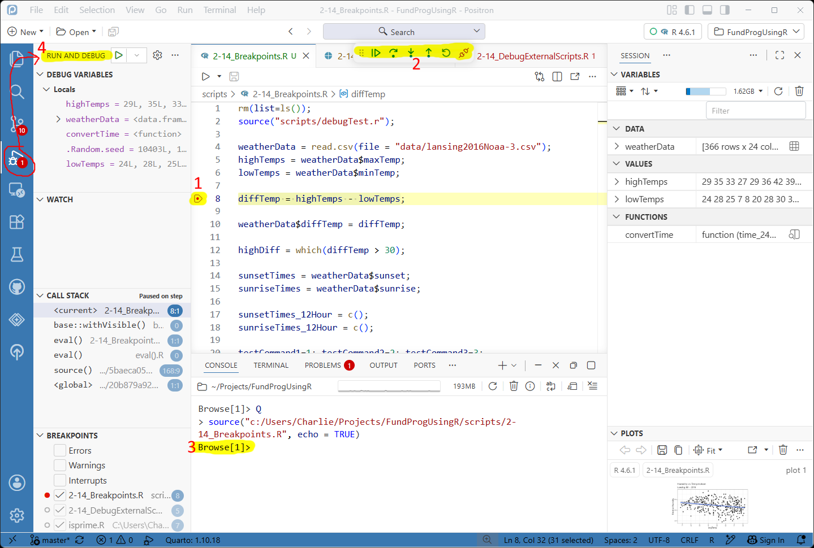
5 Using breakpoints
In the lesson script:
- Place a breakpoint at line 8 in the lesson’s script and click Source
8 diffTemp = highTemps - lowTemps;In Figure 2, the script is currently paused at line 8, this means all commands in lines 1-7 have been executed. In Variables you can see weatherData, highTemps, and lowTemps, which were added between lines 1-7.
weatherData [366 rows x 24 columns] <data.frame>
highTemps 29 35 33 27 29... int [366]
lowTemps 24 28 25 7 8 20... int [366]5.1 Entering Console commands
When in debug mode, you can enter commands in the Console. With these commands you can do things like view values in or execute functions on a vector:
Browse[1]> highTemps[1:20]
[1] 29 35 33 27 29 36 42 39 42 38 16 23 18 34 42 33 26 15 21 22
Browse[1]> max(highTemps)
[1] 94Or, you can create a new variable that gets added to Variables:
Browse[1]> highTemp_C = (5/9)*(highTemps-32)
Browse[1]>highTemp_C -1.667 1.667 0.556 -2.778... int [366]Or you can modify an existing variable (this is used a lot to test different coding scenarios):
Browse[1]> lowTemps = lowTemps - 10
Browse[1]> lowTemps
[1] 14 18 15 -3 -2 10 18 20 28 ...
[36] 8 10 22 19 12 1 0 -4 -8 ...
...
[351] -3 6 -2 -2 -1 10 19 17 24 ...
Browse[1]>6 Moving through code in debug (browse) mode
When your script arrives at a breakpoint (Figure 2), a floating control bar with six buttons appears.
In order, the control buttons are:
1) Continue: unpauses the execution of the script (like hitting the Play button when a video is paused)
2) Step Over: executes the command at the arrow (in RStudio, this is called Next)
3) Step Into: moves into a function
- if the command has no function, Step Into acts like Step Over
4) Step Out: completes a for loop or function and pauses the script at the next line
- if not in a for loop or function, Step Out acts like Continue
- BUG: if the breakpoint is in a for loop or function, Step Out will exit but not pause at the next line
- this is a pretty nasty bug because it creates very confusing scenarios!
5) Restart: Stops execution and restarts R
- BUG: broken – use Restart in Console (Figure 3), which performs the same function
6) Disconnect: quits the script (no more code is executed)
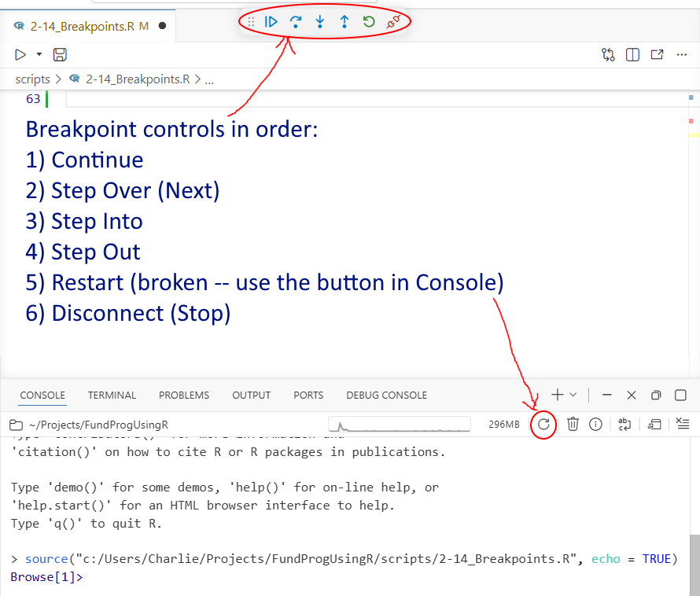
6.1 Do not use Source in Debug Mode
When in debug mode you should only use the six buttons to control the flow of your script. Clicking Source while in debug mode will put you into multiple debug modes at once. This is not something you want to do at this point. Extension: Clicking Source in debug mode.
6.2 Disconnect
Clicking Disconnect will take R out of debug mode and end the execution of the script. In other words, no more commands in the script will be executed and all the components of debug mode (Figure 2) will go away.
When you click Disconnect, Q is put in the Console. Q is the command to quit debug mode. You could directly type Q instead of clicking Disconnect.
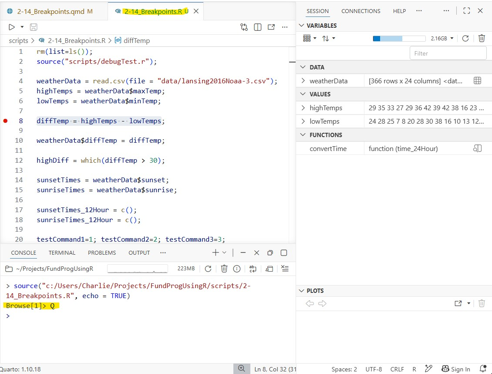
6.3 Continue to next Breakpoint
In the lesson script:
- Add a second breakpoint on line 17 (now there are breakpoints on lines 8 and 17) and click Source
17 sunsetTimes_12Hour = c();The script will pause at the first breakpoint (line 8). If you click Continue, the script will unpause and continue executing the script until the next breakpoint is reached on line 17 and pause there. Between the first and second pause, lines 8-16 are executed and the results of these commands are in Variables.
In Console, the Continue command is c.
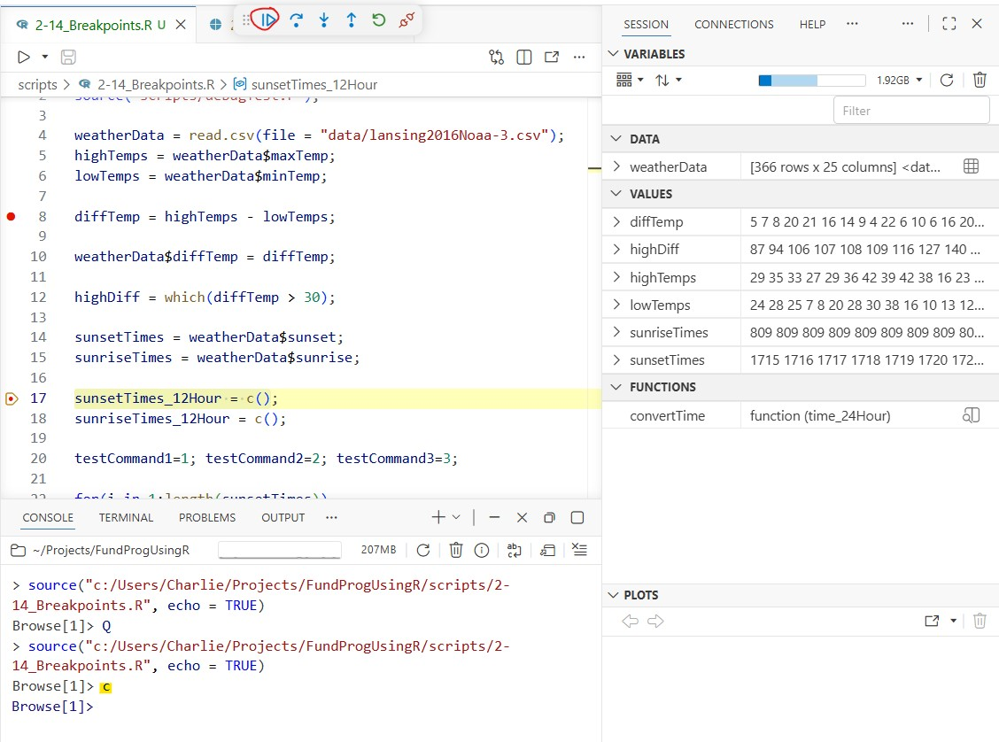
6.4 Continue to end of script
After line 17 there are no more breakpoints, so if you click Continue again, the rest of the script will be executed and you will be taken out of debug (Browse) mode.
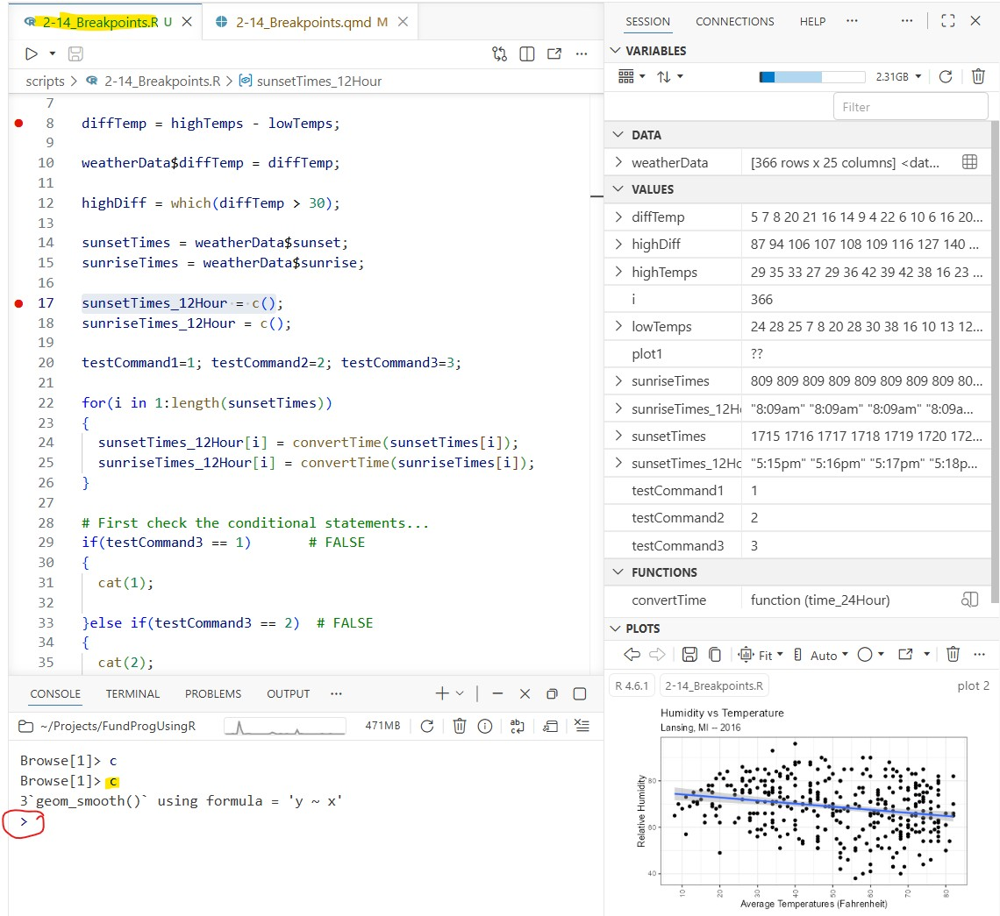
6.5 breakpoint inside for loop
In lesson script:
Remove the breakpoints at lines 8 and 17
- either click on breakpoints to remove or click Run -> Remove All Breakpoints
Add a breakpoint at line 24 (inside the for loop)
24 sunsetTimes_12Hour[i] = convertTime(sunsetTimes[i]);If you put a breakpoint inside a for loop then Continue will stop at the breakpoint every cycle of the for loop. In Figure 7, I clicked Continue 20 time and the for loop has cycled 20 times (and i = 21)
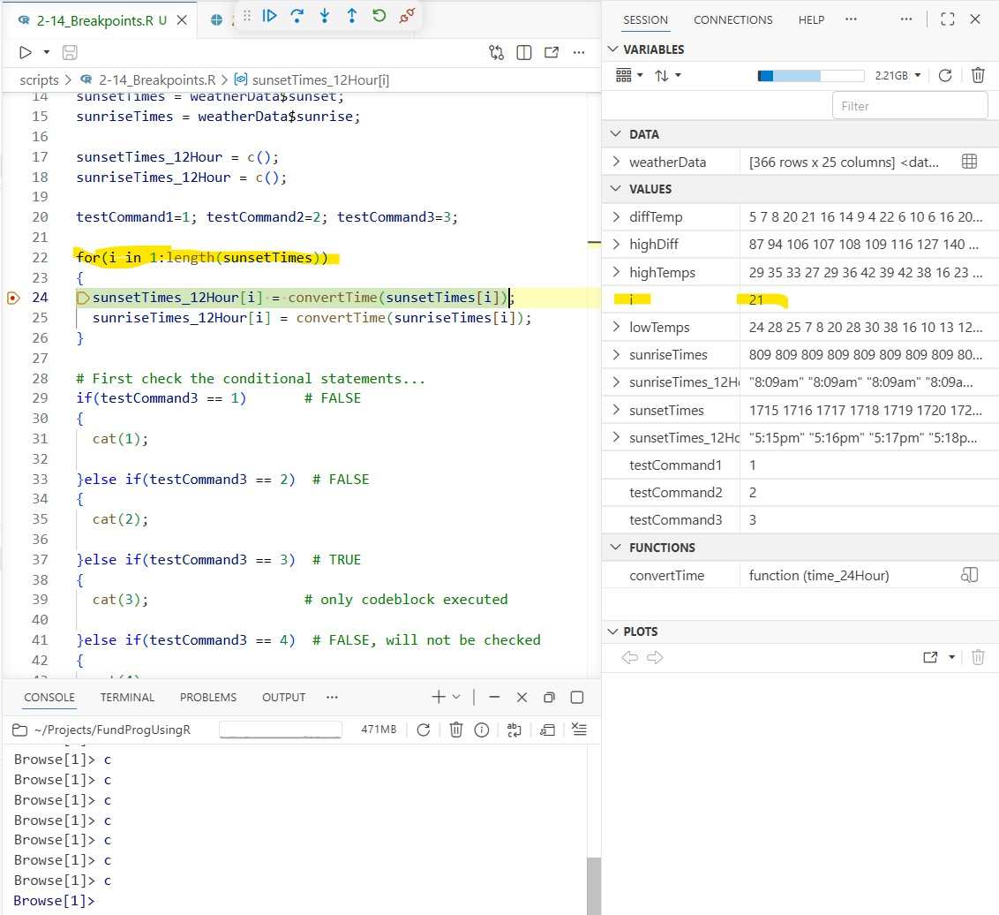
6.6 Moving out of a for loop
If you are in a for loop with thousands of cycle then you do not want to keep clicking Continue until you are out of the for loop.
There are three ways to get out of the for loop with one click:
Click Step Out – this should complete the for loop and pause execution at the next command after the for loop (line 29)
Bug fix: add breakpoint right after the for loop on line 29
Click Disconnect – this will end debug mode and stop the script but leave everything in Variables
Click Restart in Console tab (Figure 8) – this will end debug mode, restart the R session, and clean out Variables
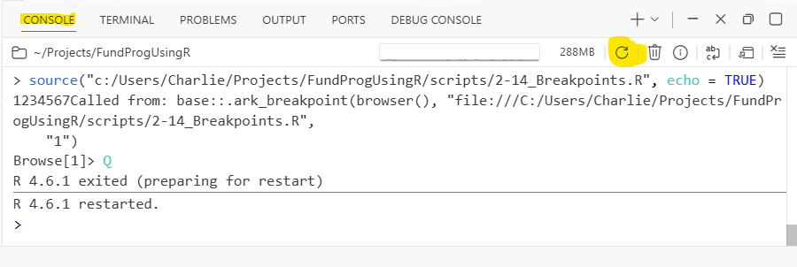
6.6.1 Restart control bug
The Restart button in the debug controls will also restart the R session and clean out Variables, but breakpoints will not work after this (this is a bug in Positron). If you click Restart in the debug controls, then you will need to either click Restart in the Console tab or close out and reopen Positron.
6.7 Step Over (Next)
In lesson script:
Remove breakpoint on line 24 (or click Run -> Remove All Breakpoints)
Add a breakpoint on line 14
14 sunsetTimes = weatherData$sunset;If we Source the script, the code up until line 13 will execute and line 14 will have an arrow in the gutter.
We can now execute one command at a time using Step Over.
Clicking Step Over executes the command on line 14 and moves the arrow to the next command on line 15. Note: In Console, the command for Step Over is n.
So, sunsetTimes is created and put in Variables and line 15, which creates sunriseTimes, is highlighted with the arrow..
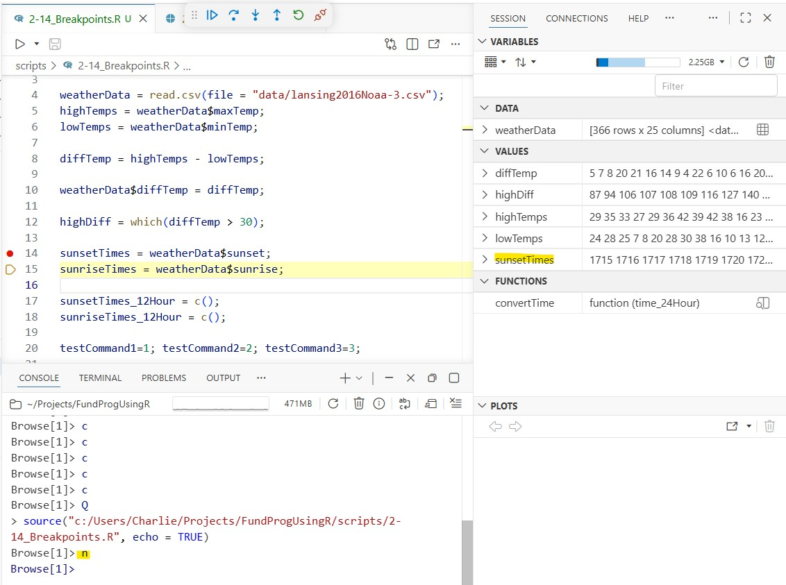
6.7.1 Step Over and Next
Many debuggers choose to call the Step Over control Next. Step Over and Next both functionally do the same thing but they take a different perspective.
Both tell the debugger to run the next command fully. But Step Over is explicitly saying to run all functions within the command (i.e., Step Over the functions), which could be thought of as subcommands. This is to contrast with Step In, which explicitly tells the debugger to go inside the functions (i.e., Step In the function). I personally feel like the term Next is more intuitive.
6.8 Multiple Commands on one line
In lesson script:
- With breakpoint on line 14, click Next until you get to line 20
20 testCommand1=1; testCommand2=2; testCommand3=3;Step Over does not execute lines, Step Over executes commands. Lines 14, 15, 17 and 18 have one command each but line 20 has 3 commands. If there are multiple commands on one line then Step Over will execute them one at a time and the debugger will highlight the current command.
The first time I click Step Over when line 20 is highlighted, testCommand1=1 gets executed and testCommand2=2 becomes highlighted within the highlighted line, indicating its the next command to execute:
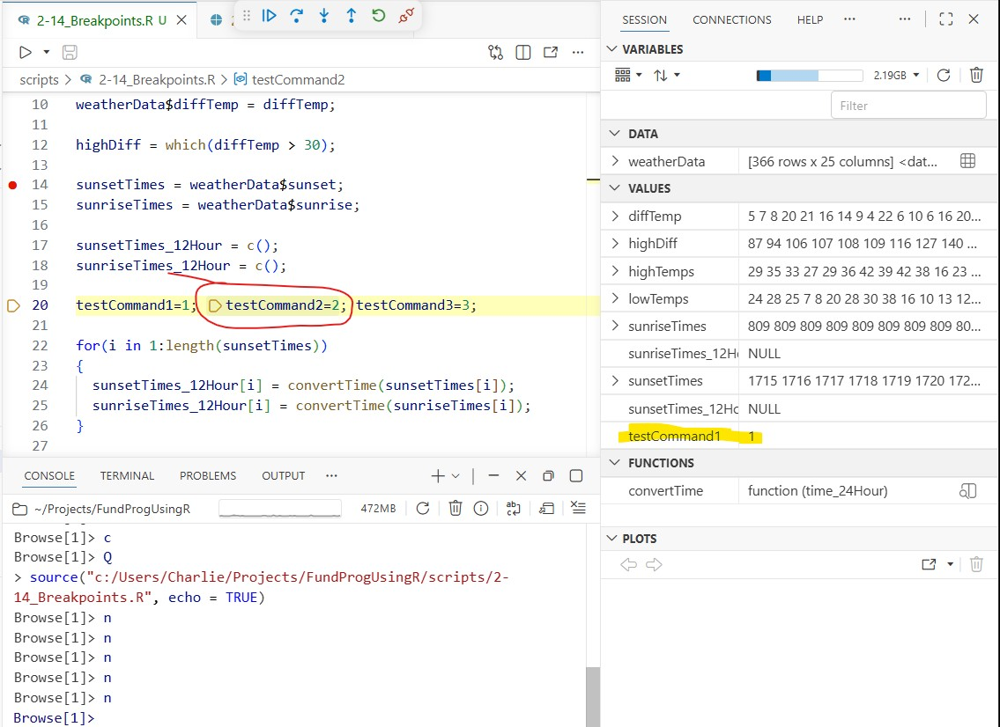
7 Debugging inside a for loop
In lesson script:
- Click Step Over until you get to line 22
22 for(i in 1:length(sunsetTimes))When the arrow gets to a for loop, Positron will highlight the whole for loop:
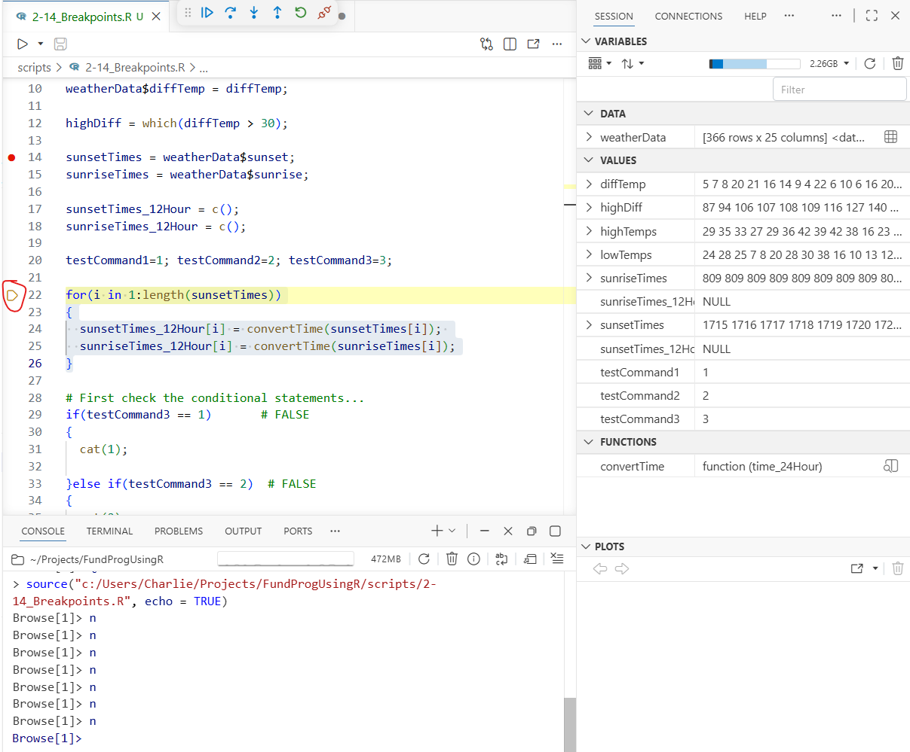
7.1 Execute for loop initialization
Clicking Step Over again executes the initialization command for the for loop:
for(i in 1:length(sunsetTimes))In this initialization command:
the variable i is set to 1 (i will be put in Variables)
a rule is given for how i changes each time the for loop cycles (i.e., i increases by 1)
the cycles end when i is equal to the length of sunsetTime
The initialization command of a for loop executes once whereas everything inside the for loop executes once per cycle of the for loop.
After the initialization command is executed, Step Over will move to the commands inside the for loop codeblock:
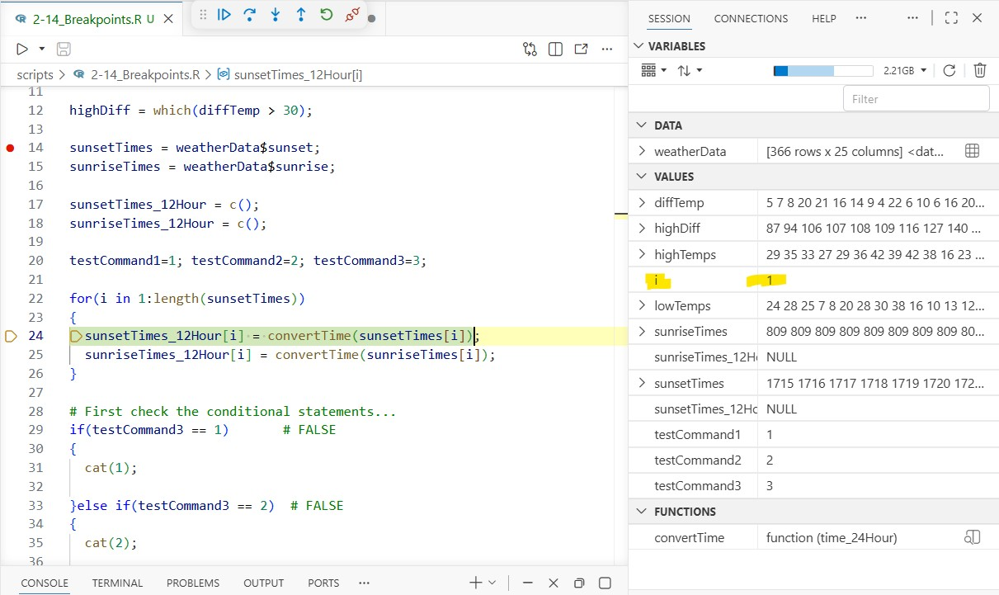
If you keep clicking Step Over then debug mode will go through each command in the for loop for each cycle of the for loop (that could take a lot of time!). If you click Continue, debug mode will go to the next breakpoint or the end of script if there are no more breakpoints.
7.2 Step Out of the for loop
Note: The for loop and Step Out bug only occurs when you stop at a breakpoint in the for loop, which is not true in this case.
If you are inside a for loop and want to finish executing the whole for loop (i.e., complete every cycle of the loop), you can click Step Out. This will execute the rest of the for loop and put the control at the next command (in this case, the if-else structure).
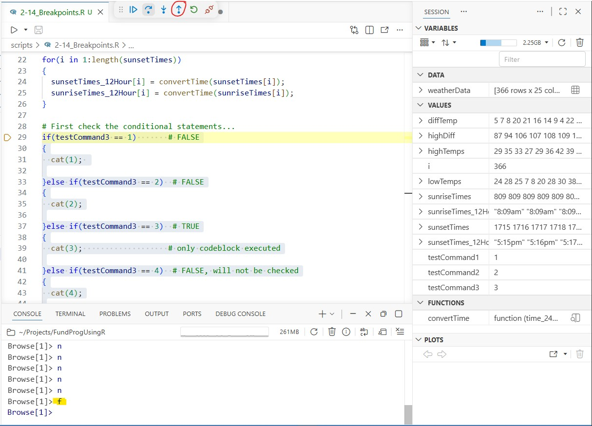
7.3 Conditional breakpoints
Debugging a for loop can be quite tricky if it is cycling thousands (or millions) of times. You likely do not want to pause the execution of your code every time the for loop cycle. Instead, you want to pause execution when an event occurs. To do this, we add a condition to the breakpoint. Conditional breakpoint only activate in debug mode when the condition is met – this is one of the most powerful debugging tools in programming.
7.3.1 Pause for loop at a specific cycle
In lesson script:
Click Disconnect
Remove all previous breakpoints (click Run -> Remove All Breakpoints…)
Right-click in the gutter area on line 25 (Figure 16)
Choose Add Conditional Breakpoint…
Choose Expression (default choice) and put in i==200
Click enter
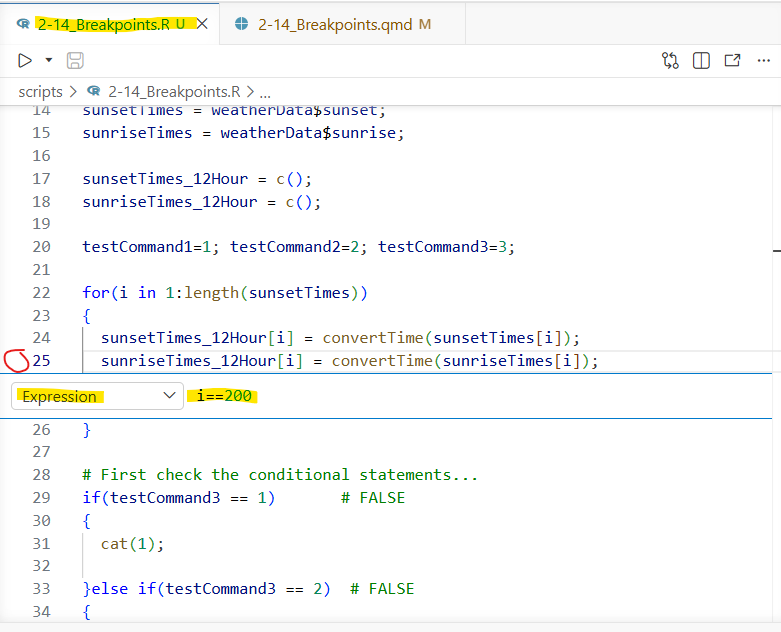
With the conditional breakpoint on line 25, the script will pause on the 200th cycle of the for loop:
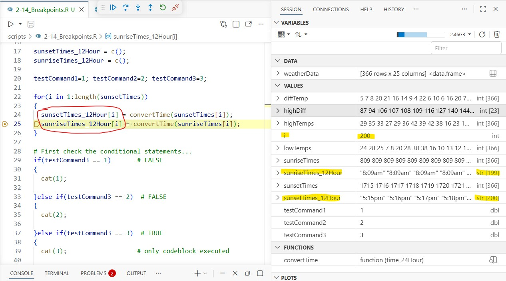
7.3.2 Expressions are conditional statements
The Expression for the breakpoint works just like a conditional statement in an if() and uses the same logic.
i>200# i greater than 200i<=200# i less than or equal to 200i==200 & j==300# i equal to 200 and j equal to 300 (assuming there is a j)
7.3.3 Pause for loop based on variable
This time we will pause the script inside the for loop when a variable meets a condition (sunsetTimes[i] == 2000)
In lesson script:
Click Disconnect
Right-click in the gutter area on line 25
Choose Edit Breakpoint…
Choose Expression and put in sunsetTimes[i] == 2000
Click enter
The script will pause on the 141st cycle of the for loop, which represents the first day that sunset is at exactly 8:00pm (2000 hours)
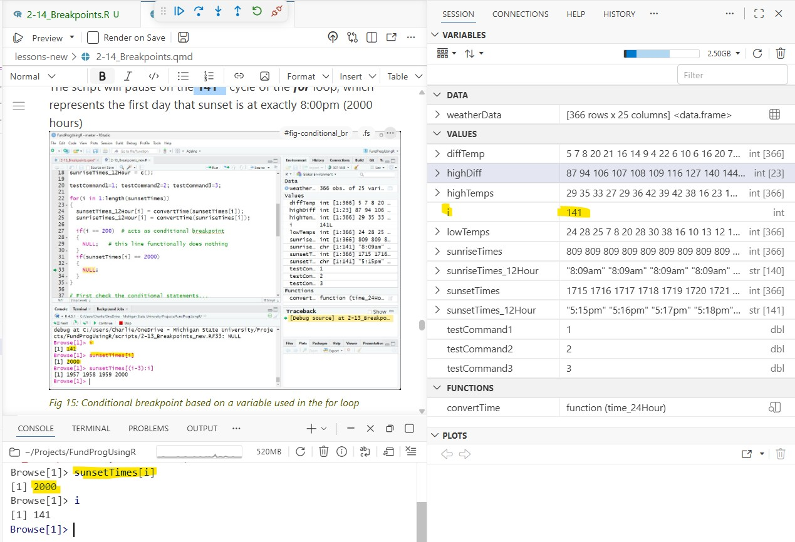
8 If-else statements
In lesson script:
Remove all previous breakpoints (click Run -> Remove All Breakpoints…)
Add a breakpoint on line 29
29 if(testCommand3 == 1) # FALSESimilar to the initialization of for loops, the conditional statement inside the parentheses of if-else statements is a command. The command outputs a Boolean (TRUE/FALSE) value that is used to determined if the codeblock gets executed.
When you set a breakpoint at the if() line, the whole if-else is highlighted in Positron when the code is stopped at the line.
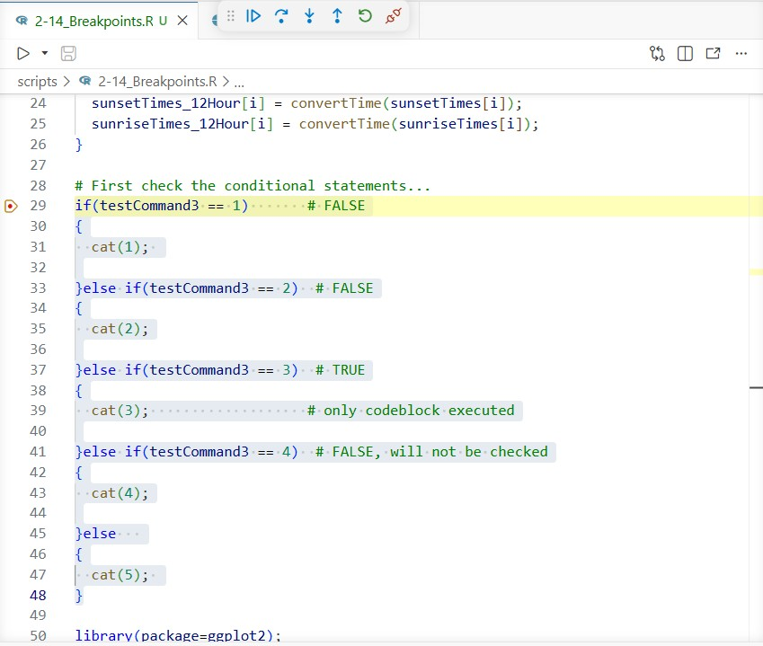
As you click Step Over, the control (arrow) will either:
move to the next conditional statement (if the current conditional statement is FALSE)
move inside the codeblock (if the current conditional statement is TRUE)
The following lines are not executed in an if-else structure and will be skipped over in debug mode:
codeblocks attached to FALSE conditional statements
else statements that were preceded by a TRUE conditional statement
- the codeblock attached to these else statements will also not be executed
8.1 Quirks with debugging if-else structures
If you put a breakpoint on an else if or else statement (lines 33, 37, 41, and 45 in Figure 17) , that breakpoint will either not work or move to the if line (line 29 in Figure 17). Breakpoints inside codeblocks attached to else if or else statements will work (assuming the codeblock gets executed).
If you put a breakpoint on line 29 in Figure 17 and click Source, Step Over will go from line 29 to 33 to 37 to 39. But only line 39 will get highlighted making it hard to see the interim steps. This seems like a bug.
9 Debugging within functions (Step In)
In lesson script:
Remove all previous breakpoints
Add a breakpoint on line 25
Inside the for loop on lines 24 and 25, we call convertTime() twice. convertTime() is a function inside 2-14_ConvertTime.r. If you click Step Over while on line 24, then the whole line is executed, along with the convertTime() function, and control will go to the next line.
You can also debug inside the convertTime() function by clicking Step In while on the lines 24 or 25 (the lines with the function) – this will move control to the function and the whole function will be highlighted:
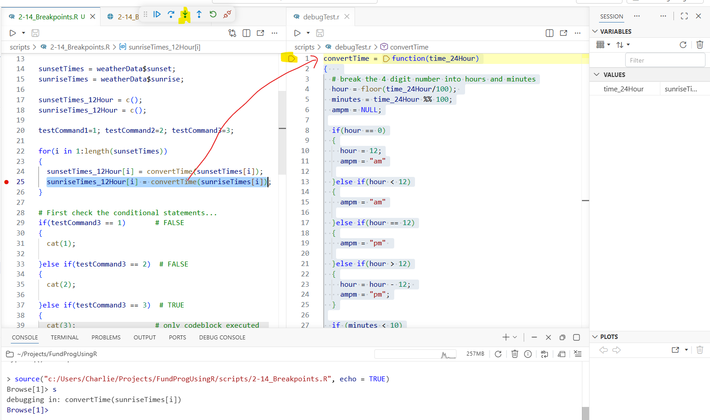
Step In works whether the function is inside the same script or in another script. However, Step In will not work if the function is loaded from a package – we will deal with this next lesson.
9.1 Executing command within the function
Once inside the function you can use the debug buttons like before. Step Over will execute one command at a time inside the function. Step Out should complete the whole function and return to the next command in the main script.
BUG: Step Out will act like Continue, meaning it will run to the next breakpoint or the end of script, similar to a for loop
10 Application
Breakpoints are designed so that someone can locally debug their script. This means breakpoints are not shared so I cannot see the breakpoint you put in your script. So, everything in this application has to be answered in comments
A) Answer the following questions:
Why might it be a bad idea to put breakpoint without a condition inside a for loop?
What happens when you try to put a breakpoint on a line with only comments? (try it)
What happens if you put a breakpoint at line 39 and click Source? How about line 35? Why is there a difference?
What happens if you put a breakpoint in the middle of the ggplot() call?
What is the difference between putting a breakpoint on line 33 vs. line 35?
B) Set up a conditional breakpoint within the for loop that pauses the script every 30th cycle.
- A good way to to do this involves using modulus division
C) Set up a conditional breakpoint within a for loop to pause the code when windSpeed is between 35 and 40mph.
Save the script as app2-14.r in your scripts folder and email your Project Folder to Charlie Belinsky at belinsky@msu.edu.
Instructions for zipping the Project Folder are here.
If you have any questions regarding this application, feel free to email them to Charlie Belinsky at belinsky@msu.edu.
10.1 Questions to answer
Answer the following in comments inside your application script:
What was your level of comfort with the lesson/application?
What areas of the lesson/application confused or still confuses you?
What are some things you would like to know more about that is related to, but not covered in, this lesson?
D) In the lesson script, where might you want to put a breakpoint if the time values are coming out like this: 12:8am, 12:9am, 12:10am?
E) What would you need to do if, after the first time the conditional breakpoint in part C is hit, you want to complete the whole for loop and pause the script (i.e., pause right after the for loop completes).
11 Extension: Clicking Source in debug mode
Sourcing a script when it is in debug mode is never a good idea. When you click Source while in debug mode, you are creating a new instance of your script with all the breakpoints attached. What this effectively means is that you are running multiple debug modes for the same script. The only real solution now is to Disconnect (Q in Console):
Browse[1]> source("c:/Users/Charlie/Desktop/test/a.R", echo = TRUE)
Browse[2]> source("c:/Users/Charlie/Desktop/test/a.R", echo = TRUE)
Browse[3]> source("c:/Users/Charlie/Desktop/test/a.R", echo = TRUE)
Browse[4]> Q
> 12 Extension: Modifying breakpoints in debug mode
Breakpoints can be added and removed at any time, even when you are already in debug mode. However, breakpoints modified in debug mode will not work until the next time the script is Sourced. You will see an the outlined gray dot indicating the breakpoint is not active.
If you remove a breakpoint in debug mode, the red dot will disappear but the breakpoint remains in effect until you exit debug mode.